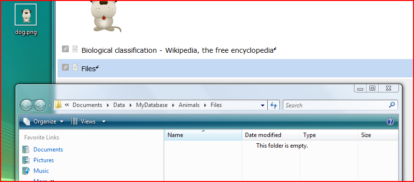

Another useful addition to some documents can be folders in the local file system. Such a folder can either be added by dragging and dropping a folder from the local file browser (eg Windows Explorer, Mac OS finder,..) onto Linnk or by selecting the menu item Menu Insert / Add Directory (Alt+D).
The new directory will be displayed as item. Clicking on the items will open the directory/folder in your default file browser. You can add files and other folders to this folder in the same way as any other folder on your local machine.
